管理员指南
管理员指南
系统设置详细配置
Root 专属的系统高级配置选项
本页面详细说明系统设置中的各个配置标签页，涵盖支付、限流、聊天、绘图等高级功能配置。
配置平台支持的支付方式和支付参数。
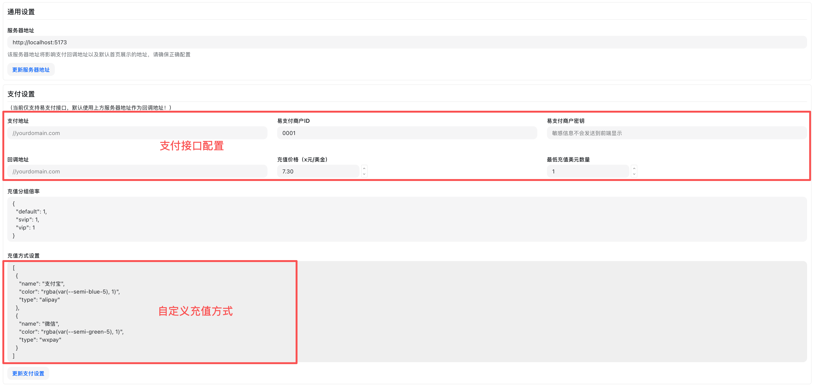
易支付是对"第三方聚合收款网关/接口"模式的泛称，并非某一家具体的网站或公司。既可指商用聚合支付服务，也可指自建/开源、遵循"易支付协议风格"的网关实现。
核心作用： 聚合微信支付、支付宝、银行卡等渠道，向商户提供统一的下单、签名校验与回调接口。
合规提示： 网关本身不等同于持牌支付机构；资金清结算与合规依赖其对接的持牌渠道，请遵循所在地监管与风控要求。
EPay 是国内聚合支付平台，支持支付宝、微信支付等。
- 在系统设置页点击「支付设置」标签页
- 找到「EPay」配置区域
- 填写以下信息：
- API 地址：EPay 提供的接口地址
- 商户 ID（PID）：从 EPay 后台获取
- 商户密钥（KEY）：从 EPay 后台获取
- 勾选「启用 EPay」
- 点击「保存」
平台回调参数包含签名，系统会进行校验并自动入账。
Stripe 是国际信用卡支付平台。
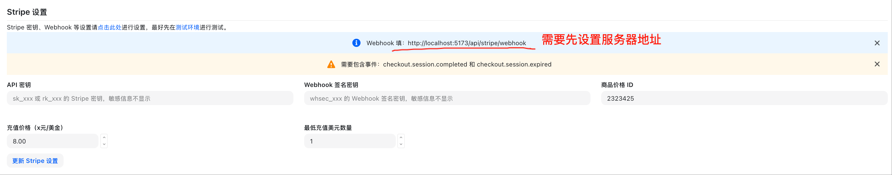
- 在支付设置页找到「Stripe」配置区域
- 填写以下信息：
- API 密钥（Secret Key）：从 Stripe 控制台获取
- Publishable Key：从 Stripe 控制台获取
- Webhook 签名密钥：配置 Webhook 后获取
- 商品价格 ID：Stripe 产品的价格 ID
- 勾选「启用 Stripe」
- 点击「保存」
Stripe 需要配置 Webhook 接收支付状态通知，Webhook URL 为：https://your-domain.com/api/payment/stripe/webhook
平台还支持以下支付方式，配置方法类似：
- Creem：国际支付平台
- Waffo：国际支付平台
在"充值方式"中，可按以下结构配置：
[
{
"color": "rgba(var(--semi-blue-5), 1)",
"name": "支付宝",
"type": "alipay"
},
{
"color": "rgba(var(--semi-green-5), 1)",
"name": "微信",
"type": "wxpay"
},
{
"color": "rgba(var(--semi-green-5), 1)",
"name": "Stripe",
"type": "stripe",
"min_topup": "50"
},
{
"name": "自定义1",
"color": "black",
"type": "custom1",
"min_topup": "50"
}
]
- name：展示文案。显示在"选择支付方式"的按钮上（如"支付宝/微信/Stripe/自定义1"）
- color：按钮/徽标的主题色或边框色。支持任意 CSS 颜色值，推荐使用现有设计令牌（如
rgba(var(--semi-blue-5), 1)）
- type：通道标识，用于后端路由与下单
stripe → 走 Stripe 网关- 其他（如
alipay、wxpay、custom1 等）→ 走易支付风格网关，并将该值作为渠道参数透传
- 详细逻辑见后端控制器 controller/topup.go
- min_topup：最低充值金额（单位与页面货币一致）。当输入金额小于该值时，页面会提示"此支付方式最低充值金额为 X"，并限制发起支付；后端也会进行校验
- 排序：按数组顺序从左到右渲染
设置用户可选择的充值数量选项，例如：
[10, 20, 50, 100, 200, 500]
这些数值会显示在"选择充值额度"区域，用户可以直接点击选择对应的充值金额。
设置不同充值金额对应的折扣，键为充值金额，值为折扣率，例如：
{
"100": 0.95,
"200": 0.9,
"500": 0.85
}
配置说明：
- 键：充值金额（字符串格式）
- 值：折扣率（0-1之间的小数，如 0.95 表示 95% 价格，即 5% 折扣）
- 系统会根据配置自动计算实付金额和节省金额
- 详细实现逻辑见后端控制器 controller/topup.go
充值折扣可以激励用户一次性充值更多金额，提高用户粘性
配置 API 调用的频率限制，防止滥用和保护系统稳定性。
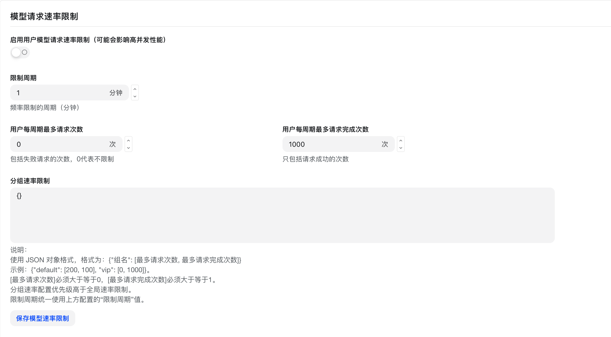
- 在系统设置页点击「限流设置」标签页
- 配置全局限流参数：
- 每分钟请求数：单个 IP 每分钟最多请求次数
- 每小时请求数：单个 IP 每小时最多请求次数
- 每天请求数：单个 IP 每天最多请求次数
- 点击「保存」
可以为不同用户分组设置不同的限流策略：
- 在分组管理页编辑分组
- 设置该分组的限流参数
- 分组内所有用户共享该限流配置
{
"default": [200, 100],
"vip": [0, 1000]
}
配置说明：
- 键：分组名称
- 值：数组，包含两个数字
- 第一个数字：每分钟请求数限制
- 第二个数字：每小时请求数限制
- 设置为 0 表示不限制
示例解释：
default 分组：每分钟最多 200 次请求，每小时最多 100 次请求vip 分组：每分钟不限制，每小时最多 1000 次请求
限流设置过低可能影响正常使用，建议根据实际业务需求合理配置
倍率设置是 MicrossAPI 计费系统的核心配置，通过设置不同的倍率可以灵活控制各种模型和用户组的计费标准。
MicrossAPI 使用三层倍率体系来计算用户的配额消耗：
- 模型倍率（ModelRatio） - 定义不同AI模型的基础计费倍数
- 补全倍率（CompletionRatio） - 对输出token进行额外计费调整
- 分组倍率（GroupRatio） - 为不同用户组设置差异化计费倍数
在 MicrossAPI 系统中，倍率是计算配额消耗的关键参数。配额是系统内部的计费单位，所有的API调用最终都会转换为配额点数进行扣减。
配额单位转换：
- 1 美元 = 500,000 配额点数
- 配额点数是系统内部计费的基础单位
- 用户的余额、消费记录都以配额点数为准
配额消耗 = (输入token数 + 输出token数 × 补全倍率) × 模型倍率 × 分组倍率
配额消耗 = 模型固定价格 × 分组倍率 × 配额单位(500,000)
配额消耗 = (文本输入token + 文本输出token × 补全倍率 + 音频输入token × 音频倍率 + 音频输出token × 音频倍率 × 音频补全倍率) × 模型倍率 × 分组倍率
MicrossAPI 采用预消费和后消费的双重计费机制：
- 预消费阶段：API调用前，根据预估token数计算配额消耗并预扣
- 后消费阶段：API调用完成后，根据实际token数重新计算配额消耗
- 差额调整：如果实际消耗与预消费不同，系统会自动调整用户配额余额
预消费配额 = 预估token数 × 模型倍率 × 分组倍率
实际配额 = 实际token数 × 模型倍率 × 分组倍率
配额调整 = 实际配额 - 预消费配额
模型倍率定义了不同AI模型的基础计费倍数，系统为各种模型预设了默认倍率。
| 模型名称 | 模型倍率 | 补全倍率 | 官网价格（输入） | 官网价格（输出） |
|---|
| gpt-4o | 1.25 | 4 | $2.5/1M Tokens | $10/1M Tokens |
| gpt-3.5-turbo | 0.25 | 1.33 | $0.5/1M Tokens | $1.5/1M Tokens |
| gpt-4o-mini | 0.075 | 4 | $0.15/1M Tokens | $0.6/1M Tokens |
| o1 | 7.5 | 4 | $15/1M Tokens | $60/1M Tokens |
倍率含义说明：
- 模型倍率：相对于基础计费单位的倍数，反映模型的成本差异
- 补全倍率：输出token相对于输入token的计费倍数，反映输出成本差异
- 倍率越高，消耗的配额越多；倍率越低，消耗的配额越少
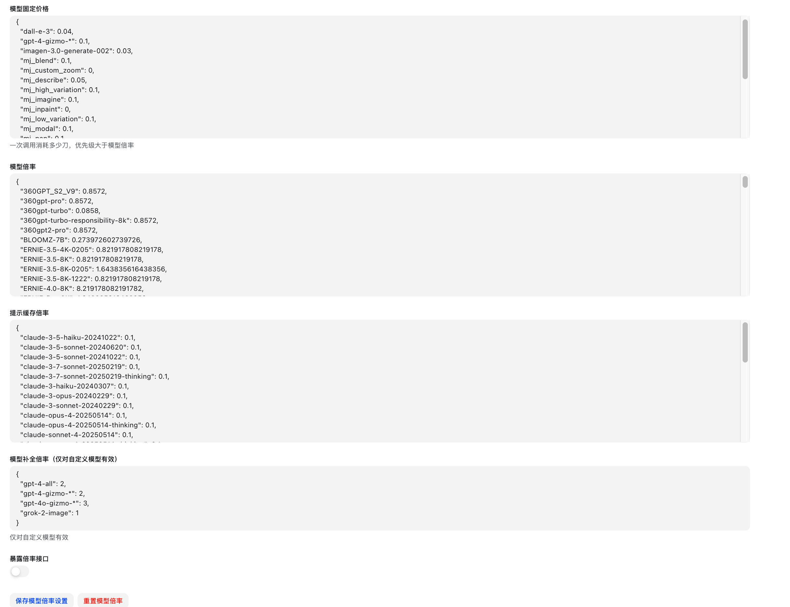
- 在系统设置页点击「倍率设置」标签页
- 在模型倍率列表中找到目标模型
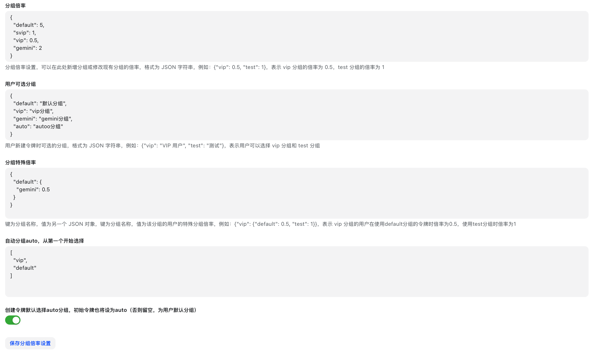
- 修改以下参数：
- 输入倍率：输入 Token 的计费倍率
- 输出倍率：输出 Token 的计费倍率
- 补全倍率：补全接口的计费倍率
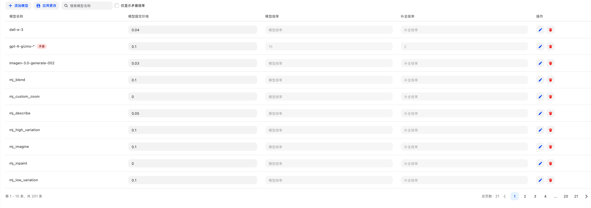
- 点击「保存」
设置方式：
- JSON格式设置：直接编辑模型倍率JSON配置
- 可视化编辑器：通过图形界面设置倍率
补全倍率用于对输出token进行额外计费，主要用于平衡不同模型的输入输出成本差异。
| 模型类型 | 官网价格（输入） | 官网价格（输出） | 补全倍率 | 说明 |
|---|
| gpt-4o | 2.5$/1M Tokens | 10$/1M Tokens | 4 | 输出是输入的4倍 |
| gpt-3.5-turbo | 0.5$/1M Tokens | 1$/1M Tokens | 2 | 输出是输入的2倍 |
| gpt-image-1 | 5$/1M Tokens | 40$/1M Tokens | 8 | 输出是输入的8倍 |
| gpt-4o-mini | 0.15$/1M Tokens | 0.6$/1M Tokens | 4 | 输出是输入的4倍 |
| 其他模型 | 1 | 1 | 1 | 输出是输入的1倍 |
设置说明：
- 补全倍率主要影响输出token的计费
- 设置为1表示输出token计费与输入token计费相同
- 大于1表示输出token计费更高，小于1表示输出token计费更低
分组倍率允许为不同用户组设置差异化的计费倍数，实现灵活的定价策略。
{
"vip": 0.5,
"premium": 0.8,
"standard": 1.0,
"trial": 2.0
}
- 用户专属倍率：为特定用户设置的个人倍率
- 分组倍率：用户所属分组的倍率
- 默认倍率：系统默认倍率（通常为1.0）
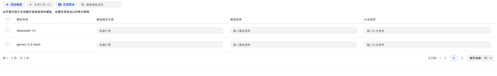
为不同用户分组设置差异化的计费倍率：
- 在倍率设置页找到「分组倍率」区域
- 选择目标分组
- 设置该分组的全局倍率系数（如 0.8 表示 8 折）
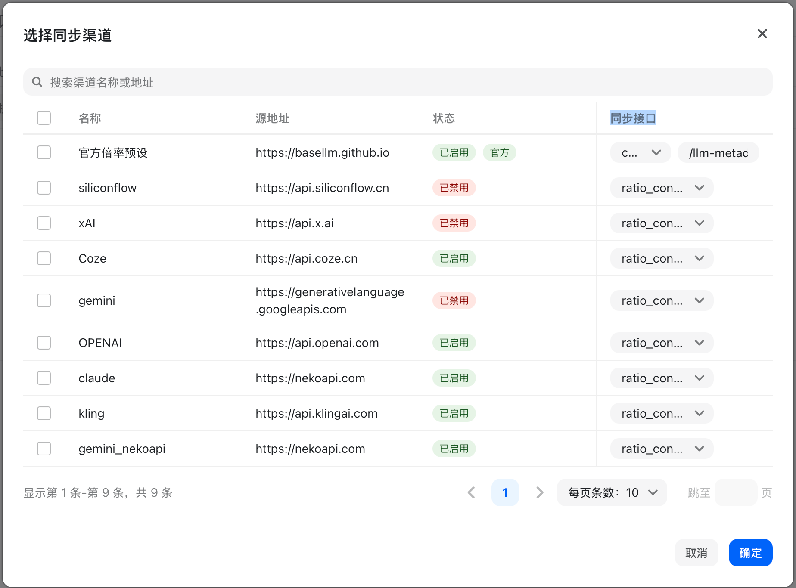
- 点击「保存」
分组倍率与模型倍率叠加计算：
最终消耗 = Token 数量 × 模型倍率 × 分组倍率
可视化编辑器提供了直观的倍率管理界面，支持：
- 批量编辑模型倍率
- 实时预览倍率配置
- 冲突检测和提示
- 一键同步上游倍率
对于未设置倍率的模型，系统会：
- 自用模式：使用默认倍率37.5
- 商业模式：提示"倍率或价格未配置"错误
- 自动检测：在管理界面显示未配置的模型
系统支持从上游渠道自动同步倍率设置：
- 自动获取上游模型倍率
- 批量更新本地倍率配置
- 保持与上游价格同步
- 支持手动调整和覆盖
A: 可以通过可视化编辑器添加新模型，或直接在JSON配置中添加。建议先设置保守倍率，根据实际使用情况调整。
A: 分组倍率会与模型倍率相乘，最终影响用户的配额消耗计算。用户的实际倍率 = 模型倍率 × 分组倍率。
A: 补全倍率主要用于平衡输入输出token的成本差异。某些模型的输出成本远高于输入成本，需要通过补全倍率进行调整。
A: 可以通过可视化编辑器进行批量操作，或者直接在JSON配置中批量添加相似模型的倍率设置。
场景参数：
- 输入token：1,000
- 输出token：500
- 模型倍率：15
- 补全倍率：2
- 分组倍率：1.0（标准用户）
计算过程：
配额消耗 = (1,000 + 500 × 2) × 15 × 1.0
= (1,000 + 1,000) × 15
= 2,000 × 15
= 30,000 配额点数
等价美元成本：30,000 ÷ 500,000 = $0.06
场景参数：
- 输入token：2,000
- 输出token：1,000
- 模型倍率：0.25
- 补全倍率：1.33
- 分组倍率：0.5（VIP用户50%折扣）
计算过程：
配额消耗 = (2,000 + 1,000 × 1.33) × 0.25 × 0.5
= (2,000 + 1,330) × 0.125
= 3,330 × 0.125
= 416.25 配额点数
等价美元成本：416.25 ÷ 500,000 = $0.00083
场景参数：
- 模型固定价格：$0.02
- 分组倍率：1.0（标准用户）
- 配额单位：500,000
计算过程：
配额消耗 = 0.02 × 1.0 × 500,000
= 10,000 配额点数
等价美元成本：10,000 ÷ 500,000 = $0.02
配置内置聊天功能的相关参数。
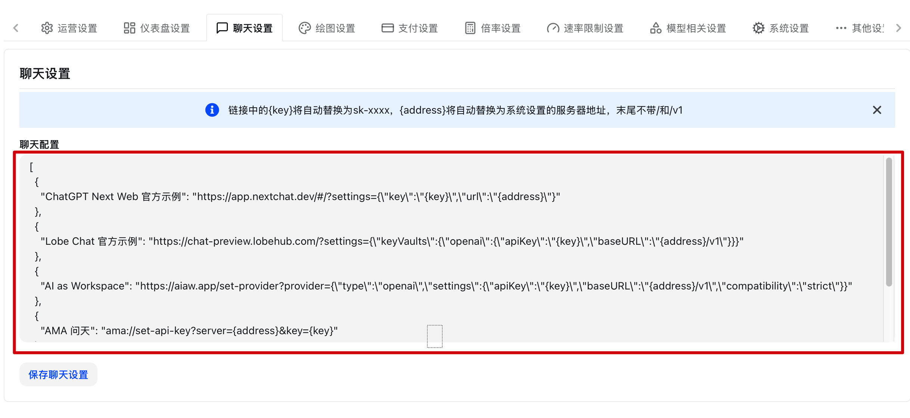
- 在系统设置页点击「聊天设置」标签页
- 配置以下选项：
- 启用聊天功能：开关控制是否启用内置聊天
- 默认模型：聊天页面默认选中的模型
- 最大历史消息数：保留的历史对话轮数
- 流式输出：是否默认启用流式输出
- 点击「保存」
在配置聊天应用集成时，可以使用以下变量：
{key}：替换为密钥（API Key）{address}：替换为服务器地址（末尾不带 / 和 /v1）
使用示例：
配置模板：
https://{address}/v1
实际替换后：
https://api.example.com/v1
这些变量在一键导入配置到聊天应用时会自动替换为实际值
配置第三方聊天应用的集成参数：
- ChatGPT Next Web：配置部署地址
- Lobe Chat：配置推荐设置
- 其他应用：配置集成参数
配置 Midjourney 等绘图功能的相关参数。
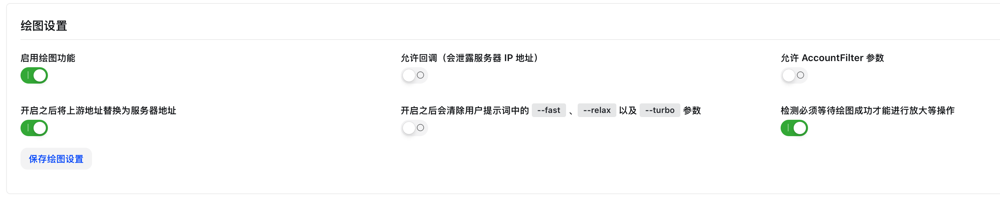
- 在系统设置页点击「绘图设置」标签页
- 配置 Midjourney 参数：
- 启用 Midjourney：开关控制是否启用绘图功能
- Midjourney Proxy 地址：Midjourney-Proxy 服务地址
- API 密钥：Midjourney-Proxy 的密钥
- 超时时间：绘图任务超时时间（秒）
- 点击「保存」
配置绘图任务的计费规则：
- 按次计费：每次绘图消耗固定配额
- 按时长计费：根据绘图耗时计费
- 按分辨率计费：根据图片分辨率计费
Midjourney 功能需要额外部署 Midjourney-Proxy 服务，详见部署文档
配置数据看板的显示内容和统计维度。
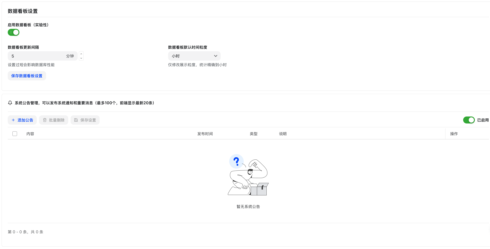
- 在系统设置页点击「数据看板设置」标签页
- 配置显示选项：
- 显示用户统计：是否显示用户数量统计
- 显示渠道统计：是否显示渠道使用统计
- 显示模型统计：是否显示模型调用统计
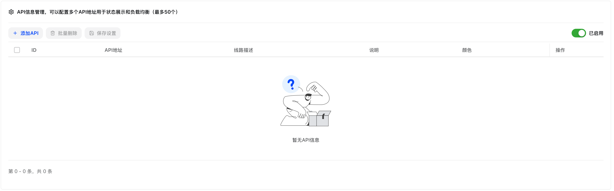
- 配置图表参数：
- 默认时间范围：看板默认显示的时间范围
- 刷新间隔：自动刷新的时间间隔
- 图表类型：折线图、柱状图或饼图
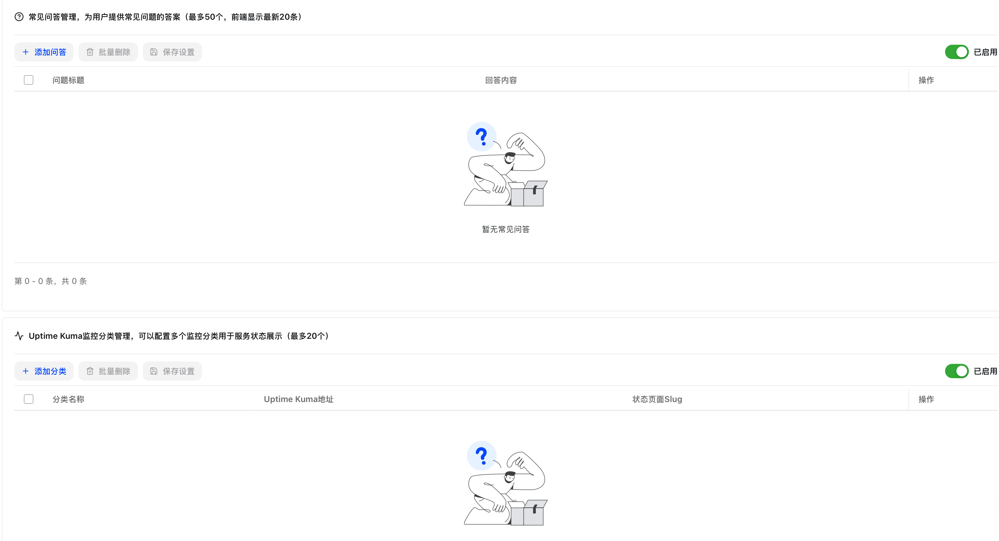
- 配置高级选项：
- 数据缓存时间：统计数据的缓存时长
- 显示实时数据：是否显示实时统计
- 点击「保存」
配置模型的显示和行为参数。
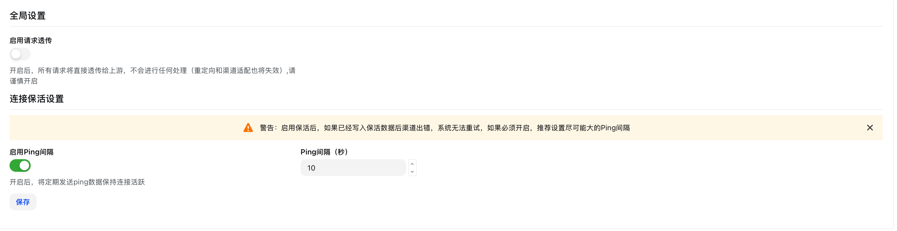
- 在系统设置页点击「模型设置」标签页
- 配置模型显示选项：
- 显示模型描述：是否在模型列表中显示描述
- 显示模型图标：是否显示模型厂商图标
- 模型分组显示：按厂商或类型分组显示
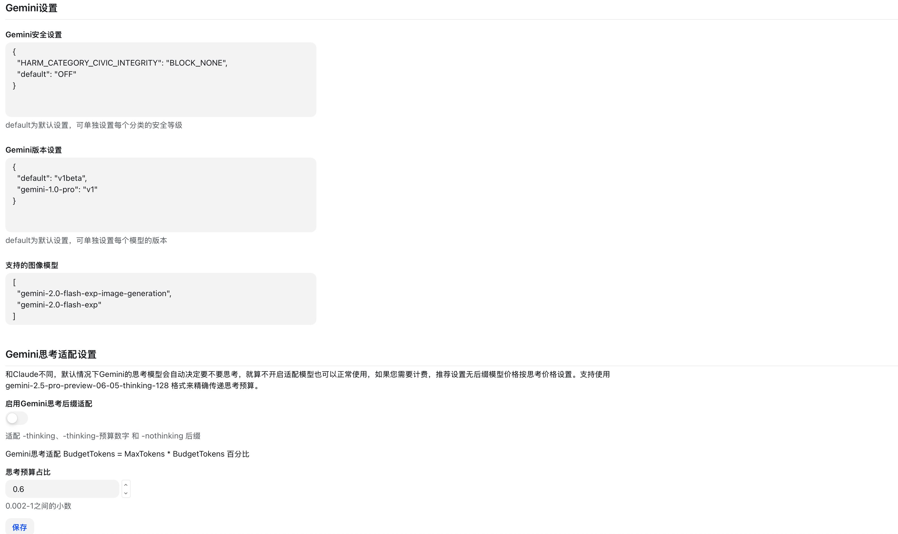
- 配置模型行为：
- 自动禁用失败模型：连续失败后自动禁用
- 失败阈值：触发自动禁用的失败次数
- 自动恢复时间：禁用后自动恢复的时间（分钟）
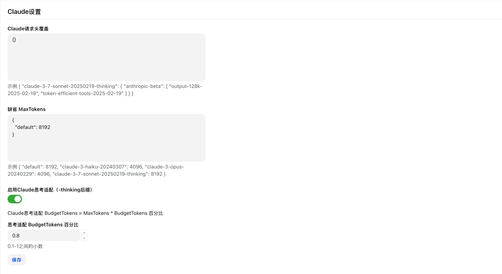
- 配置模型同步：
- 自动同步上游模型：定期从服务商同步最新模型列表
- 同步间隔：自动同步的时间间隔（小时）
- 同步时保留自定义配置：同步时不覆盖手动修改的配置
- 点击「保存」
配置平台运营相关的参数。
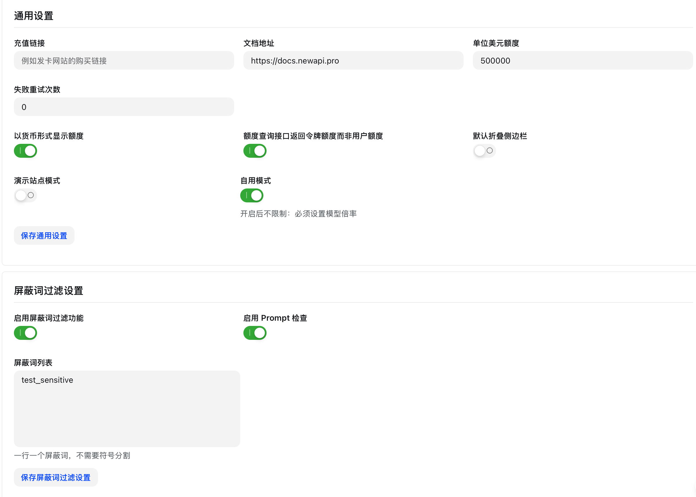
- 在系统设置页点击「运营设置」标签页
- 配置运营参数：
- 新用户初始配额：新注册用户的初始配额
- 邀请奖励配额：邀请新用户注册后，邀请人可获得的奖励配额
- 返利比例：被邀请用户在充值时，邀请人可获得的返利配额比例（%）
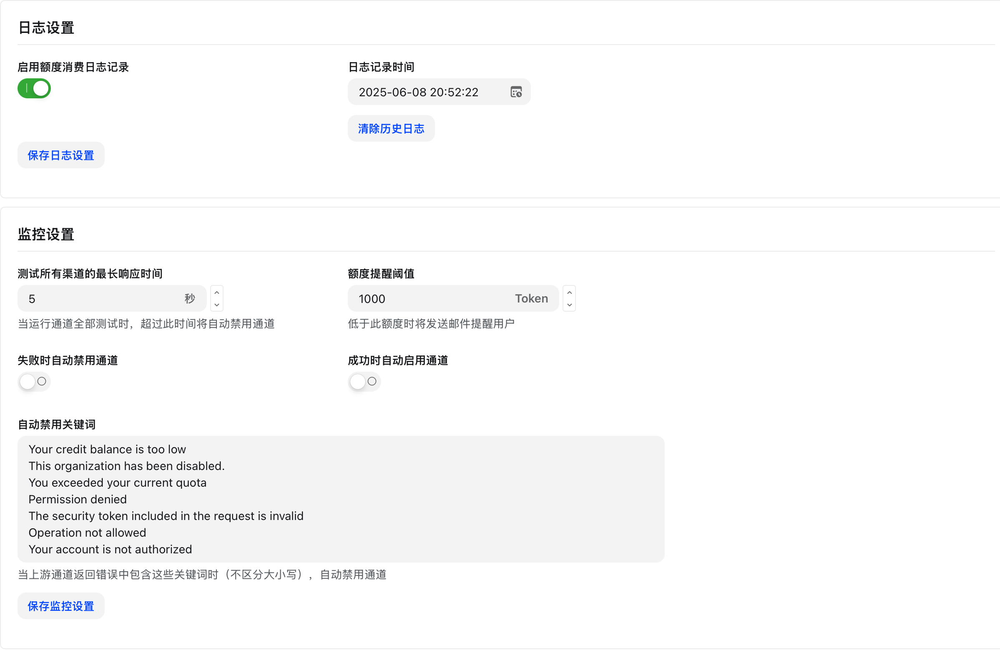
- 配置充值选项：
- 最低充值金额：单次充值的最低金额
- 充值赠送比例：充值赠送的额外配额比例
- 充值档位：预设的充值金额选项
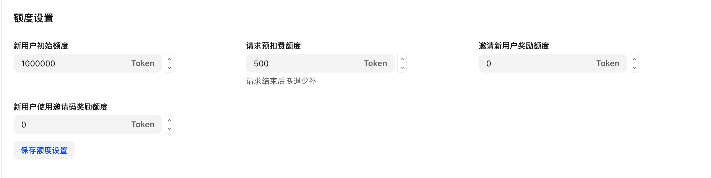
- 配置兑换码：
- 兑换码有效期：兑换码的默认有效期（天）
- 单用户兑换次数限制：每个用户可兑换的次数
- 点击「保存」
配置其他杂项参数。
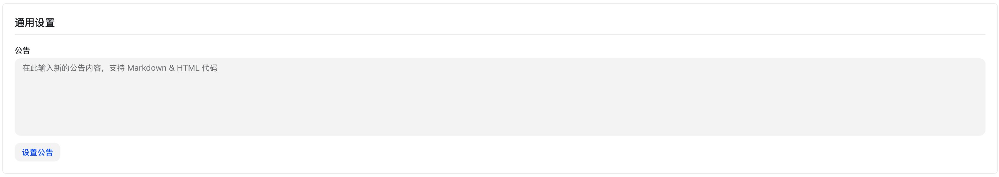
- 在系统设置页点击「其他设置」标签页
- 配置首页内容：
- 首页公告：在首页显示的公告内容（支持 Markdown）
- 首页背景图：首页背景图片 URL
- 显示统计数据：是否在首页显示平台统计数据
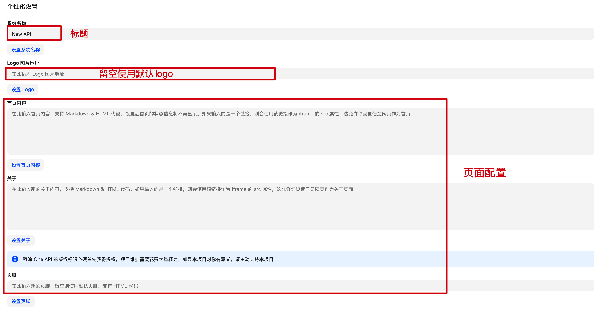
- 配置其他功能：
- 启用日志导出：允许用户导出自己的使用日志
- 日志保留天数：系统自动清理多少天前的日志
- 启用 API 文档：是否显示 API 文档入口
- 点击「保存」
以上所有设置仅 Root 用户可见和修改，普通管理员无权访问